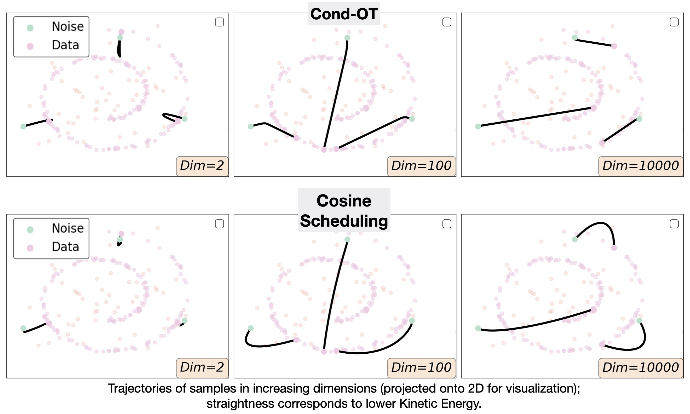

|
Neta Shaul I am a PhD student at the Weizmann Institute of Science under the supervision of Yaron Lipman. |
{kind=link}
ResearchMy research focuses on developing and advancing scalable modeling frameworks for generative models. I'm interested in variaty data types of both discrete and continuous domains (text, images, videos and proteins, etc). |
|
|
Transition Matching: Scalable and Flexible Generative Modeling
Neta Shaul, Uriel Singer, Itai Gat, Yaron Lipman Preprint, 2025 arXiv Transition matching (TM) replaces the infinitesimal-timestep kernels from Flow Matching/Diffusion with a generative model, advancing both flow/diffusion and autoregressive models. TM variants achieve state-of-the-art text-to-image generation. |
|
|
Flow Matching with General Discrete Paths: A Kinetic-Optimal Perspective
Neta Shaul, Itai Gat, Marton Havasi, Daniel Severo, Anuroop Sriram, Peter E. Holderrieth, Brian Karrer, Yaron Lipman Ricky T. Q. Chen ICLR, 2025 (Oral Presentation) arXiv Through the lens of kinetic optimality, we expand the design space of Discrete Flow Matching, allowing the use of any probability path and simultaneously justifying existing mixture paths. |

|
Discrete Flow Matching
Itai Gat, Tal Remez, Neta Shaul, Felix Kreuk, Ricky T. Q. Chen, Gabriel Synnaeve, Yossi Adi, Yaron Lipman NeurIPS, 2024 (Spotlight) arXiv Flow Matching for discrete data with applications to language modeling and image generation. |
|
|
Bespoke Non-Stationary Solvers for Fast Sampling of Diffusion and Flow Models
Neta Shaul, Uriel Singer, Ricky T. Q. Chen, Matthew Le, Ali Thabet, Albert Pumarola, Yaron Lipman ICML, 2024 arXiv Optimizing model-specific non-stationary ODE solver for fast sampling of pre-trained Diffusion and Flow-Matching models. |
|
|
Bespoke Solvers for Generative Flow Models
Neta Shaul, Juan C. Pérez, Ricky T. Q. Chen, Ali Thabet, Albert Pumarola, Yaron Lipman ICLR, 2024 (Spotlight) arXiv A novel method to build costume-made ODE solvers for sampling pre-trained diffusion/flow models. Significantly improves generation quality for low number of function evaluations. |
|

|
On Kinetic Optimal Probability Paths for Generative Models
Neta Shaul, Ricky T. Q. Chen, Maximilian Nickel, Matthew Le, Yaron Lipman ICML, 2023 arXiv We study Kinetic Optimal paths within the class of probability paths used for training generative models, and show that in high dimension Cond-OT path becomes the kinetic optimal. |
|
Design and source code from Jon Barron's website. |